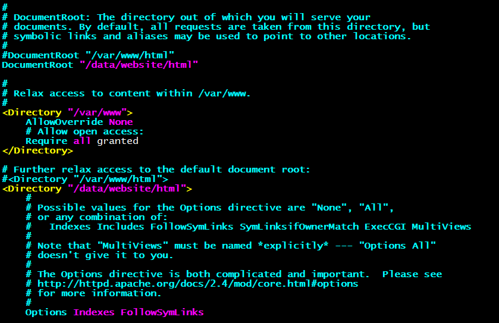
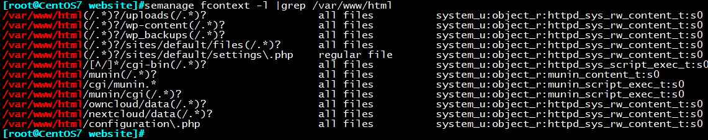

一、SELinux介绍：
SELinux(Security-Enhanced Linux) 是美国国家安全局（NSA）对于强制访问控制的实现，是
Linux历史上最杰出的新安全子系统。NSA是在Linux社区的帮助下开发了一种访问控制体系，在
这种访问控制体系的限制下，进程只能访问那些在他的任务中所需要文件。
SELinux是一种基于 域-类型 模型（domain-type）的强制访问控制（MAC）安全系统，它由NSA
编写并设计成内核模块包含到内核中，相应的某些安全相关的应用也被打了SELinux的补丁，最
后还有一个相应的安全策略。任何程序对其资源享有完全的控制权。假设某个程序打算把含有潜
在重要信息的文件扔到/tmp目录下，那么在DAC情况下没人能阻止他。SELinux提供了比传统的
UNIX权限更好的访问控制。
传统UNIX系统使用的安全系统：自由访问控制（DAC：Discretionary Access Control）
SELinx采用的安全系统：强制访问控制（MAC：Mandatory Access Control）
DAC环境下进程是无束缚的
MAC环境下策略的规则决定控制的严格程度
MAC环境下进程可以被限制的
策略被用来定义被限制的进程能够使用那些资源（文件和端口）
默认情况下，没有被明确允许的行为将被拒绝
SElinux的工作类型：
使用cat /etc/selinux/config 可以查看当前SELinux类型和系统支持的所有SELinux类型，不同系统版本支持类型有所不同
SELinux共有四种工作类型：
（1）strict：centos5,每个进程都受到selinux的控制，不识别的进程将拒绝
（2）targeted： 用来保护常见的网络服务,仅有限进程受到selinux控制，只监控容易
被入侵的进程，centos4只保护13个服务，centos5保护88个服务，不识别的服务将允许
（3）minimum：centos7,修改的targeted，只对选择的网络服务
（4）mls：提供MLS（多级安全）机制的安全性
targeted现为CentOS系统默认SElinux类型，minimum和mls稳定性不足，未加以应用，strict现已不存在
SELinux的优点与缺点：
优点：
（1）通过MAC对访问的控制彻底化
（2）对于进程只赋予最小的权限
（3）防止权限升级
（4）对于用户只赋予最小的权限
缺点：
（1）存在特权用户root
（2）对于文件的访问权划分不够细
（3）SUID程序的权限升级
（4）DAC（Discretionary Access Control）问题
二、SELinux安全上下文
传统Linux，一切皆文件，由用户，组，权限控制访问
在SELinux中，一切皆对象（object），由存放在inode的扩展属性域的
安全元素所控制其访问
所有文件和端口资源和进程都具备安全标签：安全上下文（security context）
安全上下文有五个元素组成：
user:role:type:sensitivity:category
user_u:object_r:tmp_t:s0:c0
user：指示登录系统的用户类型
role：定义文件，进程和用户的用途
type：指定了数据类别，type类别改变可能导致进程无法访问文件
sensitivity：限制访问的需要，由组织定义的分层安全级别。s0最低，Target策略默认使用s0
category：对于特定组织划分不分层的分类，Target策略默认不使用category
其中最重要的一项为文件的type标签，如httpd进程只能在httpd_t 里运行，/etc/passwd只有type
为passwd_file_t才能起作用，/var/log/messages文件如果不是var_log_t类型将无法记录日志等，
在SELinux安全策略中，修改了type类型，可能导致文件无法正常使用。
三、SElinux相关操作：
1.SELinux启用、禁用
SElinux共有三种运行模式：
SELINUX=enforcing 启用SELinux
SELINUX=disabled 彻底禁用SELinux
SELINUX=permissive 禁用，但违反SELinux策略会产生告警
getenforce 显示当前SEliunx运行模式
a）利用命令临时修改：
setenforce 0 临时切换到permissive
setenforce 1 临时切换到enforcing
b）修改配置文件：
/etc/selinux/config
/etc/sysconfig/selinux SELINUX={disabled|enforcing|permissive}
/boot/grub/grub.conf 使用selinux=0禁用SElinux
注：grub.conf优先级高于/etc/selinux/config
2.修改SELinix安全标签：
给文件重新打安全标签：
chcon [OPTION]… [-u USER] [-r ROLE] [-t TYPE] FILE…
chcon [OPTION]… –reference=RFILE FILE…
-R：递归打标；
恢复目录或文件默认的安全上下文：
restorecon [-R] /path/to/somewhere
SELinux端口标签：
semanage port -l|grep http 查看http允许使用的端口
semanage port -a -t http_port_t -t tcp 9527 添加http允许使用的端口包含9527
3.SELinux默认数据库查询与修改
查看SELinux默认数据库：
semanage fcontext -l
查看某文件放入默认SElinux类型：
semanage fcontext -l | grep /path/file
添加到SELinux默认数据库：
semanage fcontext -a –t httpd_sys_content_t ‘/testdir(/.*)?’
restorecon –Rv /testdir
从SElinux默认数据库中删除：（type类型将变回default_t）
semanage fcontext -d –t httpdsyscontentt ‘/testdir(/.*)?’
4.SELinux端口标签
在SELinux安全策略中，定义了服务具体可使用的端口号，如果服务未使用对应的端口号，将会
导致无法使用，semanage命令也可以用来修改这些默认端口。
查看端口标签：
semanage port –l
添加指定端口到指定服务：
semanage port -a -t port_label -p tcp|udp PORT
semanage port -a -t http_port_t -p tcp 9527
从指定服务删除指定端口：
semanage port -d -t port_label -p tcp|udp PORT
semanage port -d -t http_port_t -p tcp 9527
修改现有端口为新标签：
semanage port -m -t port_label -p tcp|udp PORT
semanage port -m -t http_port_t -p tcp 9527
5.SElinux布尔值
布尔型规则：
getsebool
setsebool
查看bool命令：
getsebool [-a] [boolean]
semanage boolean –l
semanage boolean -l –C 查看修改过的布尔值
设置bool值命令：
setsebool [-P] boolean value（on,off） 不加-P只修改内存，临时生效
setsebool [-P] Boolean=value（0，1） 加-P同时修改内存和配置bool
6.SELinux日志管理：
将错误的信息写入/var/log/message
yum install setroubleshoot（重启生效）
查看安全事件日志说明
grep setroubleshoot /var/log/messages
sealert -l UUID
扫描并分析日志
sealert -a /var/log/audit/audit.log
7.SELinux帮助：
yum –y install selinux-policy-devel ( centos7.2)
yum –y install selinux-policy-doc （centos7.3/7.4）
mandb | makewhatis
man -k _selinux
四、操作：SELinux环境下迁移httpd服务默认目录
将默认目录/var/www/html迁移至/data/website/html目录
一、创建/data/html目录：
mkdir /data/html
二、修改httpd服务配置文件
cat /etc/httpd/conf/httpd.conf
#DocumentRoot “/var/www/html” 加上注释
DocumentRoot “/data/website/html”
#<Directory “/var/www/html”> 加上注释
<Directory “/data/website/html”>

三、修改目录type类型：
semanage fcontext -l |grep /var/www/html 查看默认目录的文件type类型
chcon -R -t httpd_sys_content_t /data/website/html

或：
修改安全上下文数据库
semanage fcontext -a -t httpd_sys_content_t /data/html（/.*）?
restorecon -R /data/html 同步数据库type类型